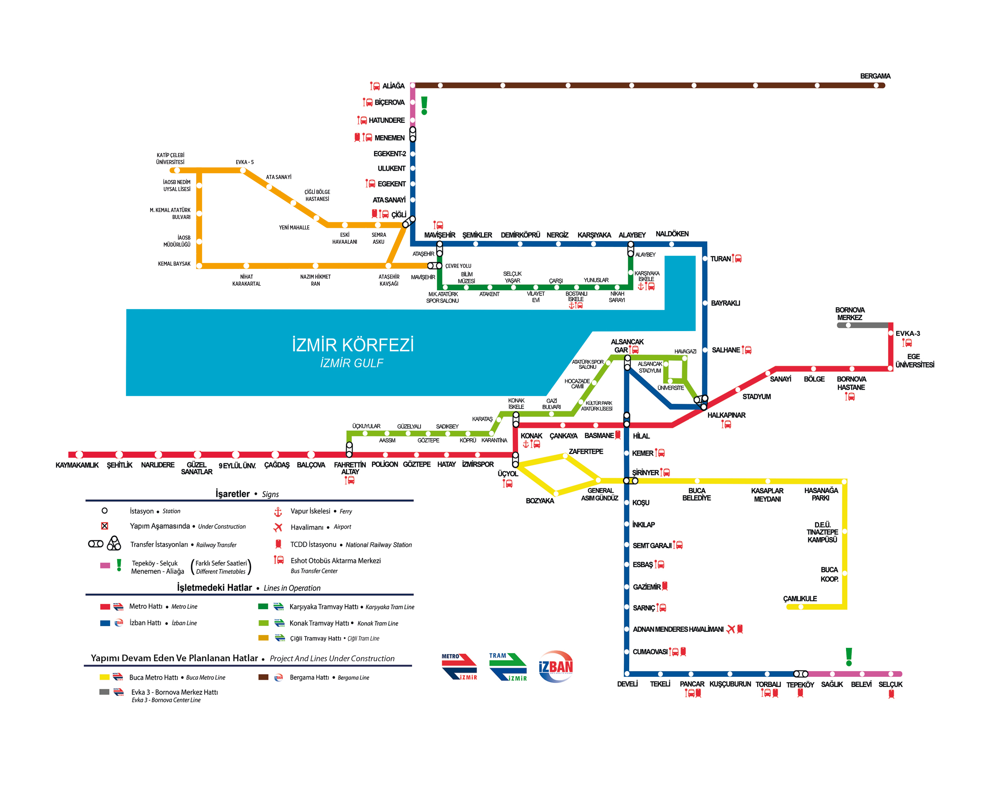

İzmir Metro A.Ş. Toplam Biniş Analizi
Yıllık Toplam Biniş Sayıları (2020 - 2024)
2024 Toplam Biniş
127,4 mn
▲ %1,5 (2023'e göre)
5 Yıllık Toplam
534,3 mn
▲ %71 (2020–2024)
En Yüksek Büyüme
%54,2
2021 → 2022
Yıllık Toplam Biniş Sayıları
Güzelbahçe ve Planlanan Metro Hattı
Güzelbahçe'de raylı sistem istasyonu bulunmamaktadır; en yakın metroya ESHOT ile ulaşım sağlanmaktadır. Planlanan metro hattı Narlıdere'den sonra 13,6 kilometre uzunluğunda olacak; 11 istasyon yapılması planlanmaktadır.
13,6 km
Planlanan hat uzunluğu (Narlıdere sonrası)
11
Planlanan istasyon sayısı
Yok
Güzelbahçe'de mevcut raylı sistem istasyonu
Planlanan Duraklar
Pertev Bey
Lojmanlar
Liman Reis
Maltepe
Anıt
Güzelbahçe İskele
Yalı
Seferihisar Kavşağı
Siteler
Çamlıçay
Planlanan İstasyonlar ve Erişilebilirlik


İzmir Raylı Sistemler Haritası
